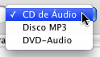
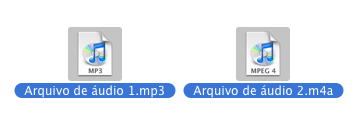
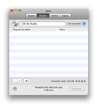
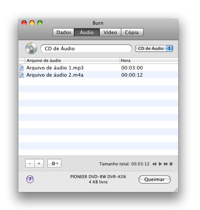
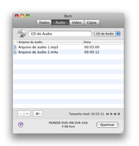
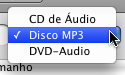
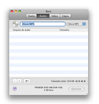
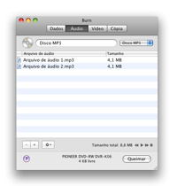
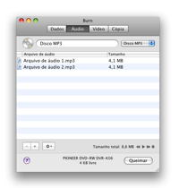
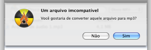

Queimando Discos de Audio:
Burn pode criar o mais comum CD Audio, mas também
um disco de MP3. Dispositivos mais novos podem tocar discos MP3. CDs
Audio podem somente ser queimados em CDs. Discos de MP3 podem ser
queimados em qualquer disco. Burn pode também queimar em um
formato pouco comum, discos DVD Audio. Alguns tocadores
domésticos são capazes de tocar estes discos. Estes
discos podem conter áudio em extra alta qualidade.
Queimando CDs de Audio:
1 Selecionar CD de
Áudio
Selecione CD de Áudio no menu popup

2 Selecionar alguns
arquivos de áudio
Selecione alguns arquivos compatíveis com Quicktime (pode ser
arquivos de vídeo também, somente o áudio é
usado)
Nota: arquivos de áudio protegido nao são suportados.

3 Jogar eles na lista:
Jogue os arquivos selecionados na lista, Burn vai verificar se eles
podem ser usados.
 

4 Clicar em Queimar
Isso irá mostrar uma janela.

5 Selecionar
opções
Selecione opções para a sessão de
gravação. Para mais ajustes, veja as Preferências
sob o menu Burn.

6 Gravar o disco
Agora clique Queimar para gravar o disco.

7 Burn
vai gravar o disco
Enquanto grava o Burn irá mostrar uma janela com o estado da
gravação.

Queimando discos MP3 e DVD Audio:
1 Selecionar Disco MP3
ou DVD Audio
Selecione Disco MP3 ou DVD Audio no menu popup.

2 Selecionar alguns
arquivos de áudio
Selecione alguns arquivos de áudio e video. Vários
formatos são suportados.
Nota: arquivos de áudio protegidos não são
suportados.
3 Jogar eles na lista
Jogue os arquivos selecionados na lista. Se os arquivos já forem
do formato correto eles serão adicionados. Se não o Burn
vai solicitar que converta eles.
 


4 Clicar em Queimar
Isso irá mostrar uma janela.
5 Selecionar
opções
Selecione opções para a sessão de
gravação. Para mais ajustes, veja as Preferências
sob o menu Burn.
6 Gravar o disco
Agora clique Queimar para gravar o disco.
7 Burn
vai gravar o disco
Enquanto grava o Burn irá mostrar uma janela com o estado da
gravação.